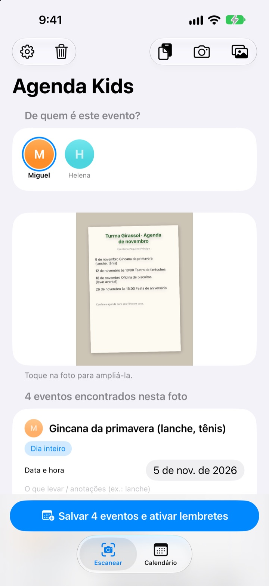
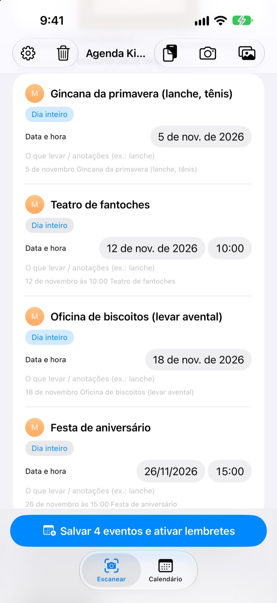
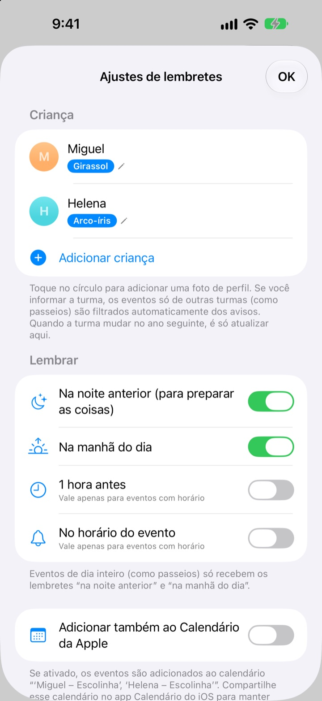
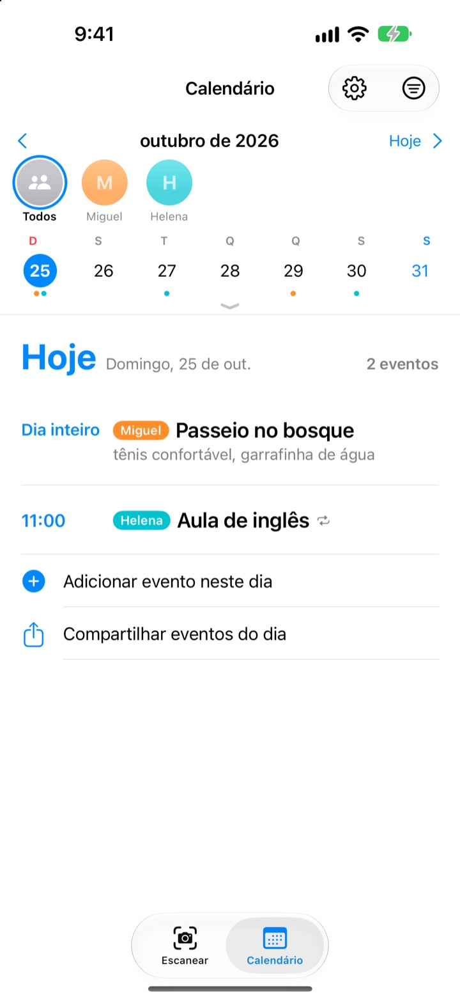

Só tire uma foto.
A gente lembra na véspera.
Tire uma foto do calendário do mês que a escolinha manda. O Agenda Kids lê as datas, os horários e o nome de cada atividade e adiciona tudo de uma vez. Na véspera do passeio, às 20h, chega o lembrete: não esqueça a lancheira.
Tudo é grátis. Suas fotos não saem do seu iPhone.

Fotografe um bilhete
Este é um bilhete de exemplo com as atividades do mês que vem. Tire a foto e, como no app, ele separa as atividades e o que levar e agenda os lembretes nos horários que você escolher.
Ainda copia o bilhete da escolinha para a agenda?
Cinco ou seis atividades por mês, e cada uma pede uma coisa diferente: lancheira, uniforme de educação física, avental. O calendário na geladeira não aparece no caminho do trabalho, e a gente sempre lembra na mesma manhã. O Agenda Kids transforma aquela folha de papel em eventos e lembretes.
Uma foto, o mês inteiro
Calendário em grade, bilhete aos pais ou aviso avulso: tire uma foto ou escolha na fototeca e as datas, horários e nomes das atividades são lidos para você. Também dá para colar uma mensagem da escolinha; “amanhã” ou “nesta sexta” viram datas de verdade.
Antes de salvar, corrija título, data ou o que levar, e deslize para apagar o que não precisa. Informe a turma do seu filho e as atividades só de outras turmas ficam de fora.

Na véspera, o lembrete
Escolha entre 20h na noite anterior, 7h30 na manhã do dia, 1 hora antes ou no horário exato. O que levar aparece no lembrete, e a mochila fica pronta a tempo.
Com o Calendário da Apple, tudo entra num calendário com o nome do seu filho, sem nada duplicado.

Vários filhos, a família toda
Cada criança tem sua cor. Veja todas juntas ou uma por vez; o app usa o histórico para adivinhar de quem é o bilhete novo.
Mande um link de convite e o parceiro, os avós ou a babá veem e editam os mesmos eventos. Um widget na Tela de Início mostra o que vem por aí.

Comece em três passos
- 1
Cadastre seu filho
Nome e turma. A foto de perfil fica para quando quiser.
- 2
Fotografe o bilhete
De frente e com o texto nítido, a leitura fica muito melhor.
- 3
Confira e salve
Permita as notificações e os lembretes chegam na hora escolhida.
Quando chegam os lembretes
- 20h na noite anterior
- Para preparar as coisas. Ativado por padrão
- 7h30 na manhã do dia
- O que tem hoje. Ativado por padrão
- 1 hora antes
- Só para atividades com horário
- No horário do evento
- Só para atividades com horário
Atividades de dia inteiro, como um passeio, recebem só o lembrete da noite anterior e o da manhã. Ative ou desative cada um quando quiser nos ajustes.
Tudo é grátis
Grátis
- Leitura de atividades em fotos e mensagens
- Correção antes de salvar e filtro de outras turmas
- Lembretes na véspera, de manhã, 1 hora antes e na hora
- Uma cor por filho e um calendário único
- Sincronização com o Calendário da Apple
- Compartilhamento com a família por link
- Widget na Tela de Início
Apoie o desenvolvedor
- Nos ajustes, você pode deixar uma gorjeta do valor que quiser
- A gorjeta não libera nada. O app funciona igual sem ela
Sem anúncios e sem assinatura.
Perguntas frequentes
Que tipo de foto funciona?
Calendários do mês em grade, bilhetes escritos em texto corrido e avisos avulsos ou folhetos. Foto tirada de frente, com o texto nítido, é lida melhor. Você também pode escolher várias fotos para escanear de uma vez.
Faltaram algumas atividades ou o título veio com erro.
Letra à mão ou texto apagado podem ser difíceis de ler. Corrija título, data ou o que levar direto na lista, ou deslize para apagar o que não precisa. Para incluir uma atividade que faltou, use “Adicionar evento manualmente” na aba Escanear e salve de novo.
Não estou recebendo lembretes.
Confira em Ajustes > Notificações > Agenda Kids se as notificações estão permitidas. Nos ajustes do app (⚙️) você também escolhe quais lembretes quer receber.
Aparecem atividades de outras turmas.
Informe o nome da turma do seu filho nos ajustes e as atividades só de outras turmas serão filtradas. Quando ele mudar de turma no ano seguinte, basta trocar ali.
Tenho mais de um filho.
Nos ajustes você cadastra quantos filhos quiser, cada um com foto. Na hora de escanear, escolha de quem são as atividades: no calendário cada criança tem sua cor, com visão geral e filtro por filho.
Como compartilho a agenda com meu parceiro ou parceira?
Nos ajustes, em “Compartilhar agenda”, toque em “Convidar pessoas” e envie o link por mensagem. Quem recebe vê e edita todos os filhos e eventos, e o que um muda aparece na hora para o outro. Não tem relação com o Compartilhamento Familiar da Apple.
Dá para compartilhar de outro jeito?
O botão de compartilhar na aba Calendário envia um arquivo do Agenda Kids, um arquivo de calendário (.ics) ou um resumo em texto. Com “Adicionar também ao Calendário da Apple”, é criado um calendário com o nome do seu filho; compartilhe-o pelo iCloud no app Calendário e a família também fica em dia.
Minhas fotos ou eventos são enviados para algum lugar?
Não. O texto das fotos é lido inteiramente no aparelho, e os dados ficam só nele. Os eventos passam pelo seu iCloud apenas se você convidar alguém em “Compartilhar agenda”, e só para quem foi convidado.
Algum problema ou ideia? Escreva para leeo@kakao.com. Costumamos responder em 2 a 3 dias. Informar o modelo do aparelho e a versão do iOS ajuda bastante.